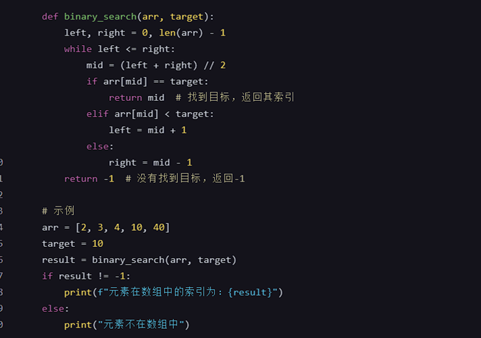

算法设计复习题
第1章 算法概述
算法的概念及性质
算法是解决问题的一系列清晰指令的有限序列，具有输入、输出和明确定义的操作步骤。算法应具备正确性、可行性、确定性和有穷性等性质。
程序的概念
程序是由编程语言编写的一组指令，用于实现特定功能或解决特定问题的计算机软件。
算法举例
- 调度问题：如作业调度、任务分配等问题。
- 排序算法：如冒泡排序、快速排序、归并排序等。
P类问题、NP类问题概念
- P类问题：指在多项式时间内可解决的问题。
- NP类问题：指可以在多项式时间内验证解的问题。NP问题不一定可以在多项式时间内求解。
算法复杂性的概念
算法复杂性描述了算法在解决问题时所需的计算资源。主要包括时间复杂性和空间复杂性两个方面。
时间复杂性的分析
时间复杂性是指算法运行所需时间的度量，通常用大O记号来表示。常见的时间复杂度包括O(1)、O(log n)、O(n)、O(n log n)、O(n^2)等。
常见的算法复杂度的大O阶
- **O(1)**：常数时间复杂度，如哈希表的插入和查找操作。
- **O(log n)**：对数时间复杂度，如二分查找。
- **O(n)**：线性时间复杂度，如简单查找。
- **O(n log n)**：如快速排序、归并排序等。
- **O(n^2)**：平方时间复杂度，如冒泡排序、插入排序等。
O(1) < O(logn) < O(n) < O(nlogn) < O(n^2) < O(2^n) < O(n!)
h函数的渐进表达式计算
函数的渐进表达式用来描述函数在自变量趋向于无穷大时的增长趋势。常见的有O大O、Ω大Omega、Θ大Theta等。
希望这些回答能帮到你！如有其他问题，请继续提问。
第2章 递归与分治
递归的概念
递归是指一个函数在定义中调用自身的过程。递归函数通常包括两部分：基本情况（递归的结束条件）和递归情况（调用自身以解决更小的子问题）。
递归方程求解
递归方程用来描述递归算法的时间复杂度。通常通过递推关系式来表示，可以使用递归树或主定理来求解复杂度。
经典递归实例
- 求和：例如计算1到n的和。
- 求阶乘：如计算n的阶乘，即n!。
- Fibonacci数列：例如计算第n个斐波那契数。
- 整数划分问题：例如将整数n划分成若干个整数的和。
- 汉诺塔问题：经典的递归问题，将圆盘从一根柱子移动到另一根柱子，要求小圆盘必须在大圆盘上方。
递归的特点及优缺点
特点：
- 简洁、直观，能够简化问题的表达和解决。
- 适用于问题的分而治之，能够自然地描述一些具有递归结构的问题。
优点：
- 简化复杂问题，使问题更易理解和实现。
- 有助于实现分治策略，使问题的分解和解决更加自然和高效。
缺点：
- 可能会导致堆栈溢出的问题，尤其是在递归层数很深时。
- 可能存在重复计算，效率较低。
分治法的基本思想
分治法将原问题分解成若干个规模较小但结构与原问题相似的子问题，递归地求解这些子问题，然后合并子问题的解来得到原问题的解。
分治法实例
- 二分搜索算法：在有序数组中查找特定元素。
- 合并排序（Merge Sort）：将数组分成两半，分别排序后再合并。
- 快速排序（Quick Sort）：选取一个基准元素，将数组分为比基准元素小和比基准元素大的两部分，然后递归地对这两部分进行排序。
第3章 动态规划
动态规划总体思想
动态规划（Dynamic Programming，简称DP）是一种通过将复杂问题拆分为更简单的子问题，并存储其子问题的解，以避免重复计算，从而提高效率的算法设计方法。它通常用于解决具有重叠子问题和最优子结构性质的问题。
- 重叠子问题（Overlapping Subproblems）：原问题可以分解为多个子问题，这些子问题会重复出现。
- 最优子结构（Optimal Substructure）：原问题的最优解可以通过其子问题的最优解构造得到。
动态规划基本步骤
- 定义子问题：明确要解决的子问题是什么，把一个大问题分解成若干个相同类型的小问题。
- 确定状态（State）：用一个数组或表格来表示每个子问题的解。
- 设置边界条件（Initialization）：初始化最简单的子问题的解。
- 状态转移方程（Recurrence Relation）：找到子问题和原问题之间的递推关系。
- 计算结果：根据状态转移方程，迭代计算每个子问题的解，最终得到原问题的解。
动态规划基本要素
- 状态定义：描述一个子问题的解，例如
dp[i]表示前 i 个元素的某种状态。 - 状态转移方程：描述如何从一个状态转移到另一个状态，例如
dp[i] = dp[i-1] + something。 - 初始状态和边界条件：为递推提供基础，例如
dp[0] = 0或其他初始值。 - 计算顺序：根据状态转移方程的依赖关系，通常是从小到大的顺序计算。
动态规划实例
1. 最长公共子序列（Longest Common Subsequence, LCS）
问题描述：给定两个字符串，找到它们的最长公共子序列的长度。
状态定义：dp[i][j] 表示字符串 A 的前 i 个字符和字符串 B 的前 j 个字符的最长公共子序列的长度。
状态转移方程：
- 如果
A[i-1] == B[j-1]，则dp[i][j] = dp[i-1][j-1] + 1 - 否则，
dp[i][j] = max(dp[i-1][j], dp[i][j-1])
初始化：dp[0][j] = 0 和 dp[i][0] = 0，因为任何字符串和空字符串的最长公共子序列长度都是 0。
2. 最大子段和问题（Maximum Subarray Sum）
问题描述：给定一个整数数组，找到具有最大和的连续子数组，并返回其最大和。
状态定义：dp[i] 表示以第 i 个元素结尾的最大子数组和。
状态转移方程：
dp[i] = max(nums[i], dp[i-1] + nums[i])
初始化：dp[0] = nums[0]，因为只有一个元素时，最大子数组和就是该元素本身。
3. 0-1 背包问题（0-1 Knapsack Problem）
问题描述：给定一个容量为 W 的背包和一组物品，每个物品有重量和价值，求解如何选择物品使得总价值最大且总重量不超过背包容量。
状态定义：dp[i][w] 表示前 i 个物品在总重量不超过 w 时的最大价值。
状态转移方程：
- 如果不选第 i 个物品：
dp[i][w] = dp[i-1][w] - 如果选第 i 个物品：
dp[i][w] = dp[i-1][w-weight[i]] + value[i] - 综合起来：
dp[i][w] = max(dp[i-1][w], dp[i-1][w-weight[i]] + value[i])
初始化：dp[0][w] = 0 对所有 w，因为没有物品时，价值为 0。
这些实例展示了动态规划在不同领域中的应用，通过定义状态、确定转移方程以及初始化，可以有效地解决许多复杂问题。
第4章 贪心算法
贪心算法的概念
贪心算法（Greedy Algorithm）是一种在每一步选择中都采取在当前状态下最好或最优的选择，以期望通过局部最优解达到全局最优解的算法设计方法。贪心算法不一定能保证求得全局最优解，但对于某些特定问题，它可以提供高效且正确的解。
用贪心算法求解的问题需具备的两个基本要素
- 贪心选择性质（Greedy Choice Property）：在当前步骤中，选择局部最优解不会影响到后续的选择能够构成全局最优解。这意味着可以通过局部最优策略来构建全局最优解。
- 最优子结构性质（Optimal Substructure）：一个问题的全局最优解包含其子问题的全局最优解。也就是说，问题的最优解可以由其子问题的最优解递归地构建出来。
贪心算法与动态规划算法的差异
- 选择标准：
- 贪心算法：在每一步选择中做出局部最优的选择，不回溯、不考虑后续可能的选择。
- 动态规划：考虑所有可能的选择，通过比较不同选择的结果来确保全局最优解。
- 适用问题类型：
- 贪心算法：通常适用于具有贪心选择性质和最优子结构性质的问题。
- 动态规划：适用于更广泛的问题类型，特别是那些具有重叠子问题和最优子结构性质的问题。
- 计算复杂度：
- 贪心算法：通常较简单且高效，适用于大多数实际情况。
- 动态规划：可能需要存储子问题的解，空间和时间复杂度一般较高。
贪心算法实例
1. 活动安排问题（Activity Selection Problem）
问题描述：给定一组活动，每个活动有一个开始时间和结束时间。要求选择尽可能多的互不重叠的活动。
贪心策略：每次选择结束时间最早且与已选活动不冲突的活动。
算法描述：
- 按照活动的结束时间从小到大排序。
- 选择第一个活动。
- 从剩余活动中选择开始时间不早于上一个选择的活动结束时间的活动。
- 重复步骤3直到没有可选活动。
2. 部分背包问题（Fractional Knapsack Problem）
问题描述：给定一组物品，每个物品有重量和价值，在允许部分取物的情况下，选择装入容量为 W 的背包，使得总价值最大。
贪心策略：按照单位重量的价值（value/weight）从大到小选择物品，尽可能多地装入背包。
算法描述：
- 计算每个物品的单位重量价值，并按其从大到小排序。
- 依次选择物品，直到背包装满或无法再装入更多物品。
3. 最优装载问题（Optimal Load Problem）
问题描述：在一个货运航班中，如何装载货物使得总重量不超过最大承载重量且装载的货物总价值最大。
贪心策略：按照单位重量的价值（value/weight）从大到小选择货物，尽可能多地装入航班。
4. 哈夫曼编码（Huffman Coding）
问题描述：给定一组字符及其对应的频率，构建一个二进制前缀码（哈夫曼码）使得编码后的字符总长度最短。
贪心策略：每次选择频率最小的两个节点合并，直到所有节点合并成一棵树。
算法描述：
- 将所有字符构建成叶子节点，并按照频率构建一个优先队列。
- 每次从队列中取出频率最小的两个节点，合并成一个新节点，并将新节点的频率设为两个节点频率之和。
- 将新节点重新放入队列。
- 重复步骤2和3，直到队列中只剩一个节点，这个节点即为哈夫曼树的根。
5. 最小生成树（Minimum Spanning Tree, MST）
问题描述：给定一个带权无向图，找到一个树，使得树包含所有节点且边的权值和最小。
常用贪心算法：Kruskal算法和Prim算法。
Kruskal算法：
- 将所有边按权重从小到大排序。
- 初始化一个森林（每个顶点各自为树）。
- 依次选择权重最小的边，若该边连接的两个顶点属于不同的树，则将其加入生成树，并合并这两个顶点所在的树。
- 重复步骤3，直到生成树包含所有顶点。
Prim算法：
- 从任意一个顶点开始，将其标记为已访问。
- 在已访问顶点和未访问顶点之间选择权重最小的边，将该边和其连接的未访问顶点加入生成树。
- 重复步骤2，直到生成树包含所有顶点。
6. 多机调度问题（Job Scheduling Problem）
问题描述：给定一组作业和多个机器，安排作业到机器上，使得所有作业完成的总时间最短。
贪心策略：每次选择最短作业时间或将作业分配到当前负载最轻的机器上。
算法描述：
- 按作业时间从短到长排序。
- 依次将作业分配到当前负载最轻的机器上。
贪心算法通过简洁有效的策略解决了许多实际问题，但并非适用于所有情况。在使用贪心算法时，需要确保问题具备贪心选择性质和最优子结构性质。
试卷结构
试卷共4页，5大题，满分 100分， 120 分钟完卷。
一、单项选择题：(每小题2分，共30分)
在下列每小题的四个备选答案中选出一个正确的答案，并将其字母标号填入下面的表格中，填入题干的括号内无效。
二、判断题：(每小题1分，共10分）
以下描述正确的打“√”，错误的打“×”，并将答案填在下面的表格中。
三、计算题：(每小题10分，共30分)
函数的渐进表达式计算（递归方程求解）、解空间树（子集树或排列树）、哈夫曼编码（构造哈夫曼树及编码）
四、简答题：(每小题5分，共10分)
动态规划总体思想、基本步骤、基本要素
动态规划通过将原问题分解为相对简单的子问题来解决复杂问题，通过存储子问题的解，避免重复计算，从而提高效率。其关键在于将问题分解为子问题，并确定子问题之间的递推关系，以便逐步求解原问题。
基本步骤：
（1）
（2）递归地定义最优值。
（3）以自底向上的方式或自顶向下的记忆化方法（备忘录法）计算出最优值。
（4）根据计算最优值时得到的信息，构造一个最优解。
基本要素：
- 最优子结构
- 状态转移方程
- 边界条件
- 状态存储
- 状态压缩
回溯法的概念及基本思想、应用步骤及剪枝函数
概念：回溯法（Backtracking）是一种通过试探所有可能的解来求解问题的算法
基本思想：逐步构建问题的解决方案，并在搜索过程中进行选择和回退，直到找到解或确定问题无解为止
应用步骤：
- 定义问题1
- 选择状态表示
- 编写回溯函数
- 递归参数
- 递归终止条件
- 递归主体
- 执行回溯搜索
分支限界法与回溯法的比较
分支限界法与回溯法的相同点是：都是一种在问题的解空间树T中搜索问题解的算法。
不同点：（1）求解目标不同；
（2）搜索方式不同；
（3）对扩展结点的扩展方式不同；
（4）存储空间的要求不同。
分支限界法的基本思想、分支限界法的两种实现方式
基本思想：分支限界法通常以广度优先或者以最小耗费优先的方式搜索问题的解空间树
两种实现方式：
队列式分支限界法（队列式分支限界法将活结点表组织成一个队列，并按照队列先进先出的原则选取下一个结点为当前扩展结点）
优先队列式分支限界法（优先队列式的分支限界法将活结点表组织成一个优先队列，并按照优先队列中规定的结点优先级选取优先级最高的下一个结点成为当前的扩展结点）
五、算法设计题：(每小题10分，共20分)
最大子段和、二分搜索算法
最大子段和
1 | |
二分搜索算法
